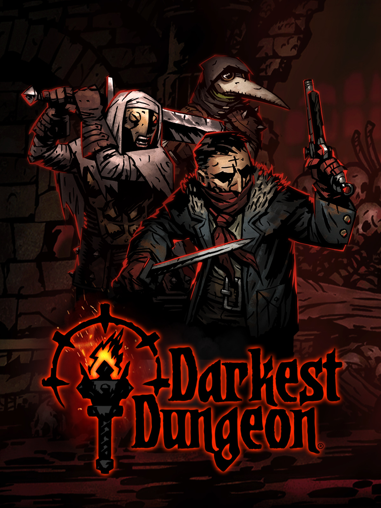
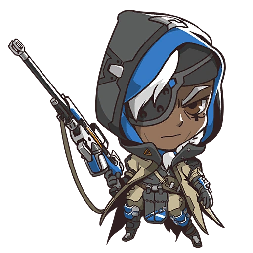
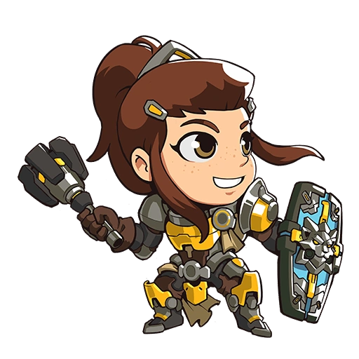
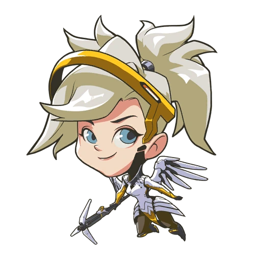
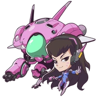
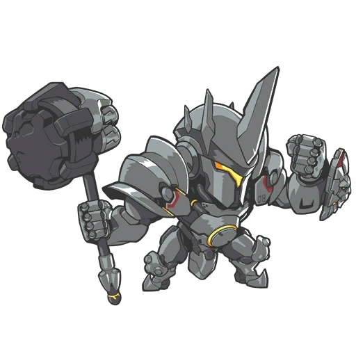

Aka: "LilikinsMarie" on Github.
I have so many hobbies. I read, play games, and make art of the poeple I love. I also really love nature -- which I think is reflected in my tastes.
For the purposes of this assignment, we'll focus on gaming.

My favorite game of all time is Darkest Dungeon; a gritty game about stress endured by adventurers. You play as the heir to a cursed estate seeking to reclaim your family's name by purging the eldritch horrors they invited into this world.
You need adventurers to throw into danger, meaning your tasks include managing their stress levels, upgrading the town, and weighing which heroes are too far gone to help. It's time-consuming, grind-y, and every extra fight encurs risking the perma-death of your adventures. Yet, the art, music, characters, and gameplay are so captivating.
Are you willing to sacrifice 3+ characters for your favorite Lvl 6 Vestal and a little extra gold? I certainly am!



Another game I play too much of is Overwatch 2. (Much to the detriment of my readings...) OW2 is a first-person hero shooter, where you play on teams of 5 with 1 tank, 2 damage characters, and 2 support character. As a suport-player, I play Ana, Brigitte, and Mercy.


As a tank, I play D.Va and Reinhardt! I like the gameplay of protecting my team with either Defense Matrix (deletes projectiles) or a giant, blocking shield.
Thank you for reading about my favorite games! :)
- Lily